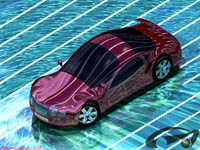
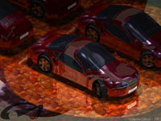

|
CATIA
ve Dassault Systemes tarafýndan, profesyonel CATIA V4-V5 kullanýcýlarýnýn
katýlýmýna açýk olarak düzenlenen tasarým/görselleþtirme yarýþmasý
CADEE (CATIA Award for Design & Engineering Excellence)
2002 yarýþmasýna Almanya'da bulunan Goetz Engineering adýna
katýlan Muharrem Çakmak yaptýðý otomobil dýþ yüzey tasarýmý
ve görselleþtirmesi ile 3. dereceyi aldý. Muharrem Çakmak'ýn
bu çalýþmasý, saðda resimleri görülen, CATIA V5'in Class A
yüzey modelleme ve yüzey kalitesi analiz araçlarýnýn bir gösterisi
niteliðinde olan bir otomobil dýþ gövde tasarýmý ve görselleþtirmesiydi.
CADEE
2002 yarýþmasýnda dereceye girenler:
- Juhani
Matilainen, Valtra Inc, Finlandiya
- Darren
Cokin, Boeing, ABD
- Muharrem
Çakmak, Goetz Engineering, Almanya
- Timo
Piirainen/Pertti Lepisto/Miko Rautamies, Elomatic, Finlandiya
- Rainer
Meier, Grundig AG, Almanya

Kazanan tasarýmlar, yarýþmada dikkate alýnan kriterler ve
katýlým koþullarý hakkýnda bilgiye aþaðýdaki adreslerden ulaþýlabilir:
CADEE
2003 baþvurularý ise 8 Mart 2004'e kadar devam
edecektir. Kazananlar geçmiþ yýllarda olduðu gibi COE (CATIA
Operators Exchange) Spring / USA'de açýklanacak ve ödüllerini
alacaklardýr.
Muharrem
Çakmak hakkýnda:
Uludað Üniversitesi Bilgisayar Destekli Tasarim Bölümü'nden
1997 yýlýnda birincilikle mezun olan Çakmak, daha sonra bir
süre ayný Üniversite'nin Makine Mühendisligi Bölümü'ne devam
etti.
Çakmak,
daha önce de ayný yarýþmaya, Türkiye'de iken çalýþtýðý Coþkunöz
A.Þ. adýna katýlmýþ ve derece almýþtý. Yarýþmada aldýðý ilk
derecenin Almanya'da iþ bulmasýný kolaylaþtýrdýðýný belirten
Çakmak, bu tür yarýþmalarýn, yeteneklerini göstermek ve iyi
referanslar elde etmek isteyenler için çok güzel bir firsat
olduðunu ve kazanmanýn ise sanýldýðý kadar zor olmadýðýný,
sözlerine eklemektedir.
2001
yýlýndan bu yana Almanya'da otomotiv sektöründe tasarým ve
görselleþtirme üzerine çalýþan ve Þubat 2003'den bu yana da
TurkCADCAM e-posta grubunun aktif bir üyesi olan Muharrem Çakmak'a
m.cakmak@gmx.de adresinden
ulaþýlabilir.
|